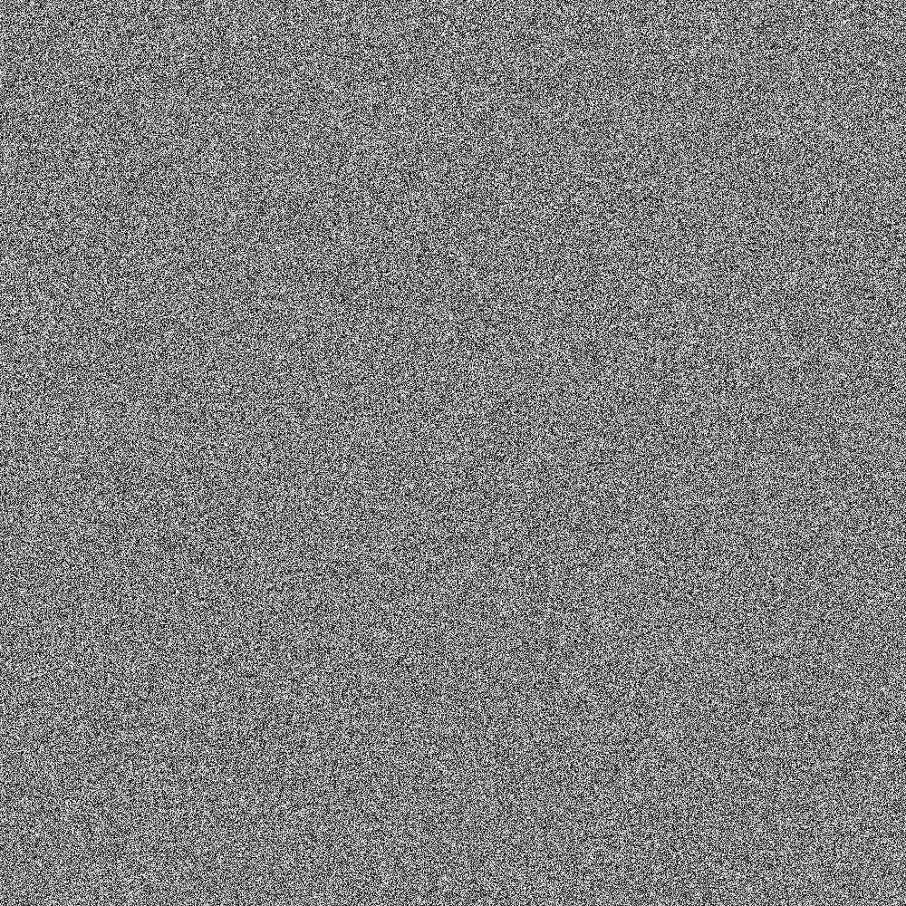

Bucketing users in two groups is a key part in A/B testing. We need to randomly assign users to a bucket. And in practice, we need to make sure a user is assigned to the same bucket consistently.
First, we need a user identifier.
Database Solution
We want to store a variation per user in a database. Hence we have key-value store with the user-identifier as key and the variation as value.
The code then is as follows:
import random
from typing import Dict
def get_variation(user_id: int) -> str:
# Some initialization / connection with a key_value_store
variation = key_value_store.get(user_id)
if variation is None:
# The user_id was not in the key_value_store
variation = assign_user_to_variant(user_id, {"A": 0.6, "B": 0.4})
return variation
def assign_user_to_variant(user_id: int, distribution: Dict[str, float]) -> str:
"""
Assign the user_id to a variant.
Parameters
----------
user_id : int
distribution : Dict[str, float]
Maps the name of a variant to a float. The sum of all should be 1.
Returns
-------
variant : str
"""
assert sum(distribution.values()) == 1.0
user_number = random.random() # in the interval [0, 1]
prob_sum = 0.0
for variant, prob in sorted(distribution.items()):
if prob_sum <= user_number < prob_sum + prob:
return variant
prob_sum += prob
return variant
In case the user_id is not an integer, you have two ways to assign one:
- Have another table mapping the strings to the numbers, counting up from 0.
- Use a hash (e.g. MD5) and convert the hexstring to a number (base 16 conversion). Optimizely uses a MurmurHash (Python: mmh3)
Seeding Solution
The above solution is nice, because it is absolutely clear how it works. It is not so nice that you need to access a database.
Instead, you can play around with the seed of the random number generator. This makes the database call obsolete. By seeding we can guarantee the output of the random number generator while still having (pseudo) random numbers.
import random
from typing import Dict
def assign_user_to_variant(user_id: int, distribution: Dict[str, float]) -> str:
"""
Assign the user_id to a variant.
Parameters
----------
user_id : int
distribution : Dict[str, float]
Maps the name of a variant to a float. The sum of all should be 1.
Returns
-------
variant : str
"""
assert sum(distribution.values()) == 1.0
random.seed(user_id)
user_number = random.random() # in the interval [0, 1]
prob_sum = 0.0
for variant, prob in sorted(distribution.items()):
if prob_sum <= user_number < prob_sum + prob:
return variant
prob_sum += prob
return variant
Please note that this has another nice property: If you change the distribution slightly, then as many users as possible keep what they have.
A potential problematic property: Always the same users get to be in the "A" variant. So if you always choose the names "current" vs. "new", then some users will always end up in A/B tests. This is not good as the new variant might be brittle or have flaws.
Instead, we can give the test an unique name and thus do:
import random
from typing import Dict
import mmh3
def assign_user_to_variant(
user_id: str, test_name: str, distribution: Dict[str, float]
) -> str:
"""
Assign the user_id to a variant.
Parameters
----------
user_id : str
test_name : str
distribution : Dict[str, float]
Maps the name of a variant to a float. The sum of all should be 1.
Returns
-------
variant : str
"""
assert sum(distribution.values()) == 1.0
seed = mmh3.hash(user_id + test_name)
random.seed(user_id)
user_number = random.random() # in the interval [0, 1]
prob_sum = 0.0
for variant, prob in sorted(distribution.items()):
if prob_sum <= user_number < prob_sum + prob:
return variant
prob_sum += prob
return variant
Random Number Generators
We might want to generate the variations across multiple systems. Most of the
code above is trivial to execute in any programming language. However, the
output of random.seed(0); random.random() might differ between programming
languages or even versions of a programming language. The reason are
differences in the random number generators.
A Pseudo-Random Number Generator (RNG) is a key component for the described solution. In the following is a list of the components:
| Name | Seed | Neighboring Seeds | Used By |
|---|---|---|---|
| Mersenne Twister | ✔️ | Different results | Python 2.3 to 3.8, R |
| Linear congruential generator | ✔️ | Similar results | Java 8, C++, PHP?, Perl |
| Permuted Congruential Generator 2 | ✔️ | ? | Numpy |
| ChaCha20 | ? | ? | Rust |
| xorshift128+ | ? | ? | JavaScript (V8) |
| Xoroshiro128+ | ✔️ | Different results | |
| Threefry / Philox | ✔️ | Different results |
I cannot properly judge the statistical quality of those, but I recommend reading 1 and 2.
However, I tried java-random and
visualized the results (code).
What you see is 1000 random numbers generated. The colum is the seed, the row
are 1000 consecutive random numbers. Clearly, the numpy and the Python version
look better:
| Java | Python | Numpy (PCG64) |
|---|---|---|
|  | ||
| Do you see the stripes? This means neighboring seeds lead to similar sequences. Kudos to my colleague James Blewitt who made me aware of this problem. | This is how it should look like - no pattern to be seen. | |
| MT19937 | Philox | Xoroshiro128 |
| SFC64 | Xorshift1024 | ThreeFry |
{kind=link}
{kind=link}
{kind=link}
{kind=link}
{kind=link}
{kind=link}
{kind=link}
{kind=link}
{kind=link}
Security in the sense of predictability of the sequence is also an important property in many contexts. In the context of A/B-Testing, however, it does not matter. State size is also interesting.
PHP and Golang do either not at all or at least not clearly state what the default random number generator is.
TL;DR
Bucketing is easy as long as you have one system (OS and Programming language /
library) where you execute the bucketing. Once you have more, you need to take
care of how random.random() actually works
See also
-
Melissa E. O'Neill: PCG: A Family of Simple Fast Space-Efficient Statistically Good Algorithms for Random Number Generation, 2014. ↩
-
Babu, Thomas: Freestyle, a randomized version of ChaCha for resisting offline brute-force and dictionary attacks, 2018. ↩
-
Optimizely: How bucketing works ↩
-
Dario Gieselaar: The Engineering Problem of A/B Testing, 2019. - Just a nice post about A/B Testing in general. ↩
-
Wikipedia: List of random number generators ↩